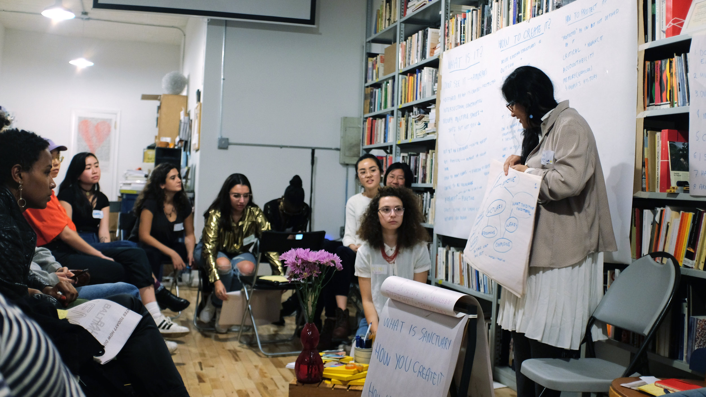
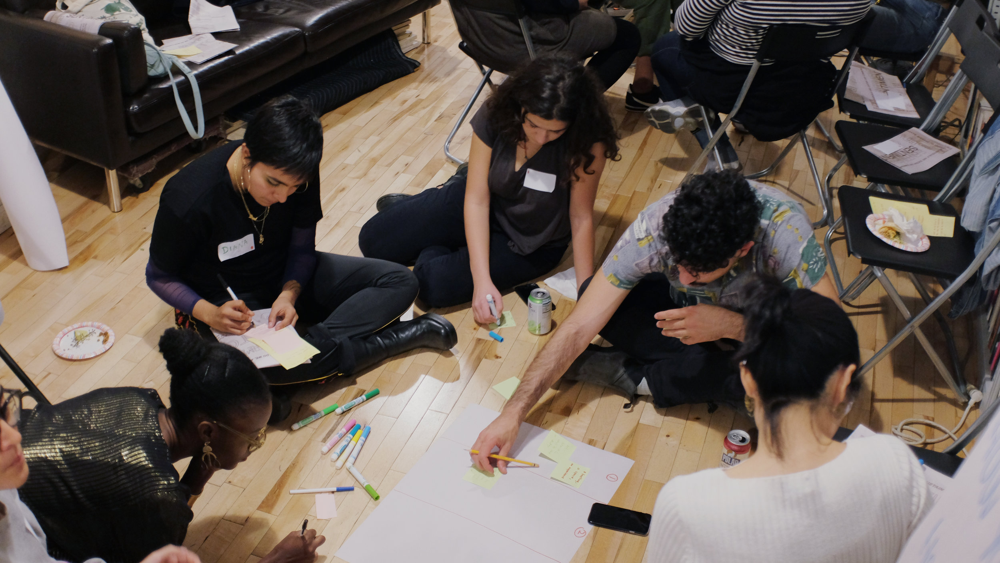
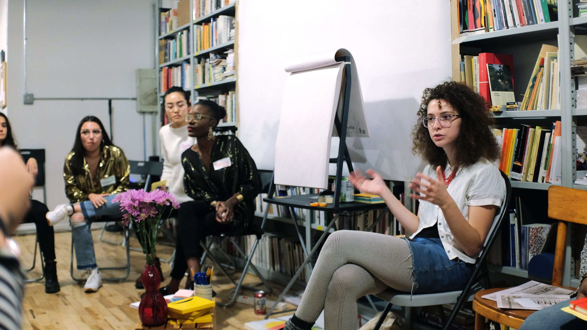
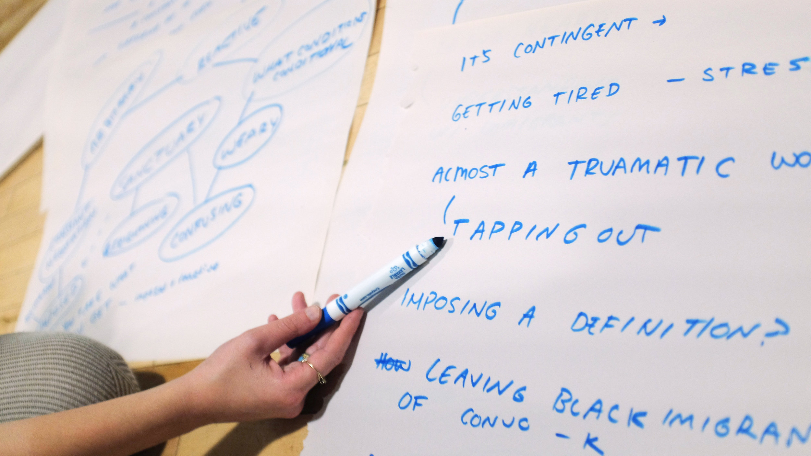
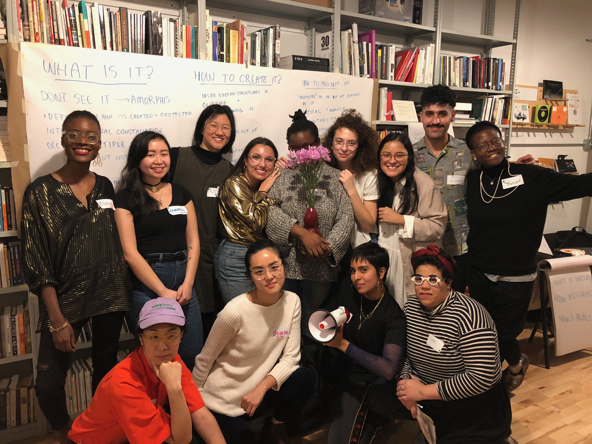

Who is considered to be an ‘immigrant’ in the United States today? How do we, as immigrants, manage to thrive as individuals and sustain our communities? How do our experiences as ‘foreign’ citizens vary and overlap? How can a nuanced understanding of immigrant identities and experiences inform our understanding of and contribute to the dismantling of white supremacy?
 Sentiments is a compilation of the sensitivities, hacks, gestures, and actions that we, as immigrants, have used to bring our lives into being. It serves as a tool kit for sanctuary-building and -keeping, self-determination, and resistance, that takes the form of a series of ongoing conversations, gatherings, and collaborations throughout 2017-2018, that will culminate in a publication and exhibition in Summer 2018 taking place in Baltimore, Maryland. Sentiments is a project produced in three interrelated parts; part one surfaces the narratives of immigrants through a series of personal interviews; part two documents a series of mother-daughter and familial collaborations or conversations; and part three features a collectively-built manifesto for sanctuary-building & -keeping. With an emphasis on femme immigrant identities, Sentiments features individuals and families in Baltimore and beyond, and aims to build empathetic space around difference by addressing the intersections of various immigrant experiences and embracing our power through collective and collaborative work.
 A Manifesto For Sanctuary-Keeping & -Building
This manifesto emerges at a time where the ongoing targeting of immigrant communities and the violation of human rights continues: the recent ending of the Deferred Action for Childhood Arrivals (DACA), the refugee crisis across the globe, mass deportations, and the unfortunately all-too-familiar misconduct of institutional bodies. Within this context, sanctuary has a multiplicity of meanings. For undocumented immigrants, it might mean a sanctuary city like Baltimore, where authorities do not report on the legal status of its residents; or the simple right of not being forcefully removed from home. For refugee families, who undergo years of applications, travel, and more, it might mean finally arriving at place where physical safety is seemingly more possible than before. And for many others, it might mean having the possibility of living in a place where fear of alienation, physical harm, or otherwise, is not a daily risk because of one’s cultural or religious practices; and instead, individuals’ and communities’ practices are seen as rich and admirable contributions to society. Through an interrogation of the notion of sanctuary, this manifesto collects and affirms the expertise of various immigrant experiences in building, maintaining, imagining, fighting for, and demanding sanctuary, thus defining what it can be.
*Images by Yunique Palmer Saafir